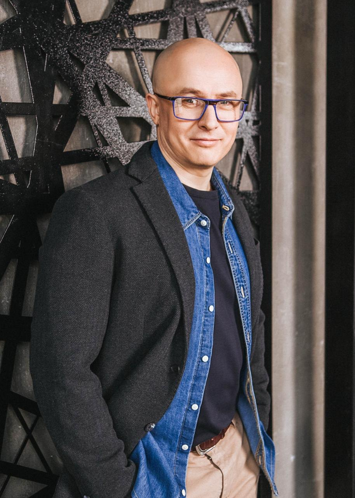
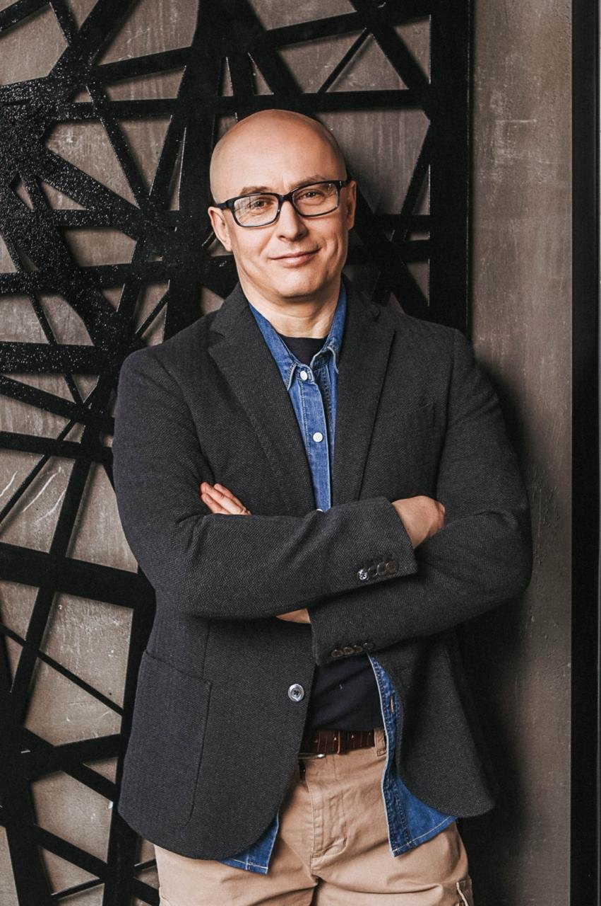
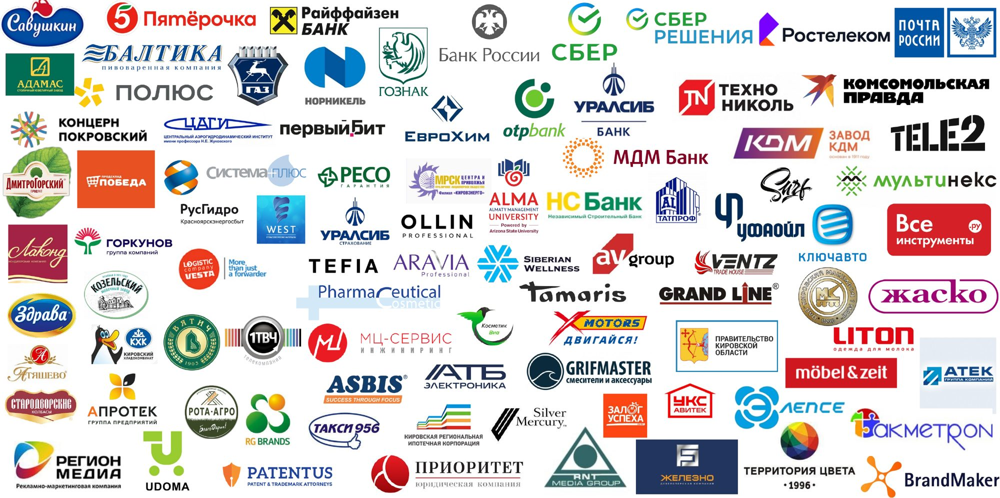

+20%продаж за 4 месяца
Продажи
Нефтетрейдер, Уфа
Рост продаж на 20% за четыре месяца в кризисный для отрасли год. Результат проекта по продажам.
Стратегическая сессия для руководящей команды
Один-два дня очно. Приоритеты, решения по ассортименту, каналам продаж, сегментации и клиентам. Итог – план, где у каждого пункта есть ответственный, срок и условие пересмотра.
30 минут с Алексеем Урванцевым. Без обязательств.

Какие инициативы берём в работу на ближайшие годы, а какие откладываем. Приоритеты расставляет команда, а не один человек.
Каналы продаж, сегментация клиентов, работа с ключевыми клиентами: где искать рост и что для этого меняем.
Какой продукт и на каких условиях мы предлагаем рынку и что говорим клиенту в деньгах, сроках и снятых рисках.
Прежний способ работать перестал давать результат, а новый вариант никто не предложил. Собираем идеи и проверяем их на реалистичность.
Руководители оценивают положение компании по-разному. На диагностике это видно до сессии, на сессии мы приходим к общему.
Задачу сессии определяем на 30-минутном разговоре. Не все пункты нужны каждой компании.
Сессия – рабочий инструмент. Но она ломается в трёх местах.
Если включить в одну группу руководителей высшего звена и руководителей отделов, первые начнут управлять обсуждением, а вторые замолчат. Идеи тех, кто знает дело, не звучат.
Пока руководитель высказался первым, остальные подстраиваются. А внутри компании любая позиция читается как борьба за ресурс или за место, поэтому правду говорят не все.
Идеи были, но у них нет ответственного, срока и критерия проверки. Поэтому через месяц ничего не изменилось.
Стратегическая сессия по моей методике строится под эти три места.
30 минут. По итогам скажу, нужна ли вам сессия, в каком формате и что можно сделать своими силами.
Нажмите на этап, чтобы раскрыть
Отдельно разговариваю с каждым ключевым руководителем: первым лицом, топ-менеджерами, участниками. Разбираю вашу нишу и прошлые стратегические сессии.
Становится видно, насколько по-разному вы оцениваете запас прочности компании, и кто способен предложить решение, а кто только диагноз. Бывает, что все идеи находятся на уровне руководителей отделов, а у топов их нет ни одной.
Если включить в одну группу руководителей высшего звена с руководителями отделов, первые начнут управлять обсуждением, а вторые замолчат. Где-то уровни нужно развести, где-то наоборот смешать подразделения.
Работаем очно, на вашей территории. Серия штурмов по вашим задачам, группы соревнуются количеством и качеством идей. Инструменты подбираем под задачу: SWOT, пять сил Портера, ТРИЗ и другие. Первое лицо высказывается последним.
Новое встраивается в то, что уже работает – принцип методики бережного внедрения изменений «Переплавка©». План внедрения собирается на самой сессии, а не высылается потом.
Что делаем в первую очередь, что позже, от чего отказываемся. Приоритеты согласованы всей командой.
У каждого пункта есть владелец, дата и критерий, по которому проверяем выполнение.
Что, когда, кто, как проверяем и что делаем при отклонении. Не высылается потом, а собирается в зале.
Первые шаги и момент, когда команда возвращается к плану и проверяет, что работает.
Кто затормозит внедрение, кто близок к выгоранию, что с каждым делаем.
Точный план сессии определяем после диагностики. Не всё из списка нужно каждой компании.

Алексей Урванцев, тренер-практик по авторитетному влиянию (продажи, выступления, переговоры, управление). 500+ корпоративных проектов в производстве, торговле, банках, ритейле.
Внутри компании на стратегической сессии трудно говорить правду: любая позиция читается как борьба за ресурс или за место. Я не участвую в ваших конфликтах, задаю вопросы, которые внутри задавать неудобно, и ухожу после получения результата.
Рост продаж на 20% за четыре месяца в кризисный для отрасли год. Результат проекта по продажам.
После пустого месяца вышли на 20 сделок в неделю без демпинга и распродаж.
Стратегическая сессия: вовлечены все участники, по итогам приоритизированы инициативы на 2025–2027 годы.
За сессию команда разработала несколько десятков идей и сразу проверила их на реалистичность. Часть пошла в работу сразу после мероприятия.
Письма-благодарности открываются в карточках. Контакты для рекомендаций – по запросу.

Листайте логотипы в сторону.
Фото с тренингов, семинаров и выступлений Алексея разных лет
1 из 45
Можете. Но внутри компании любая позиция читается как борьба за ресурс или за место, а первое лицо задаёт рамку. Начинаем с разговора, а не с сессии: если задача решается без неё, я так и скажу.
Обычно причина в составе групп. Топы оказались в одной группе с подчинёнными и разобрали их идеи как нереальные. Это решается до сессии, а не модерацией по ходу.
Решения остались без ответственного, срока и критерия проверки. Поэтому план внедрения собирается на самой сессии, а не высылается потом.
Отрасль знаете вы и ваша команда. Моя работа – сделать так, чтобы это знание превратилось в решения.
Один-два дня, очно, на вашей территории.
Диагностика – 250 000 ₽, день сессии – 250 000 ₽, трекинг внедрения – 250 000 ₽ за 8 часов.
Это ориентир: итоговая стоимость – после диагностики. Для юридических лиц РФ при заказе от 500 000 ₽ возможна рассрочка или факторинг.
30 минут. Разберём задачу, состав участников и состояние команды. По итогам скажу, нужна ли вам сессия, в каком формате и что можно сделать своими силами.